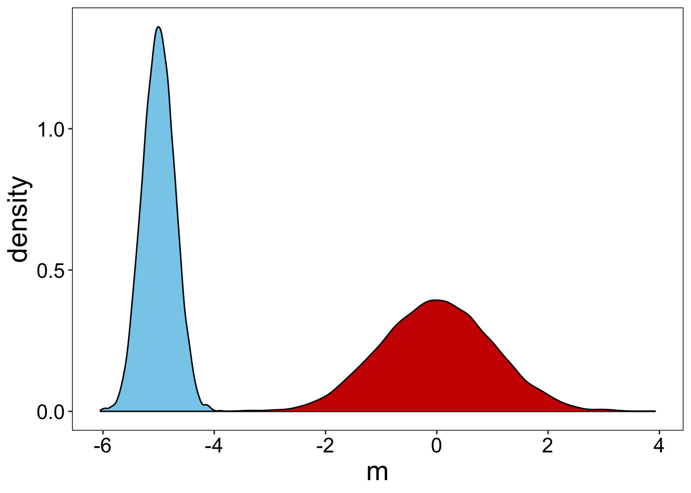
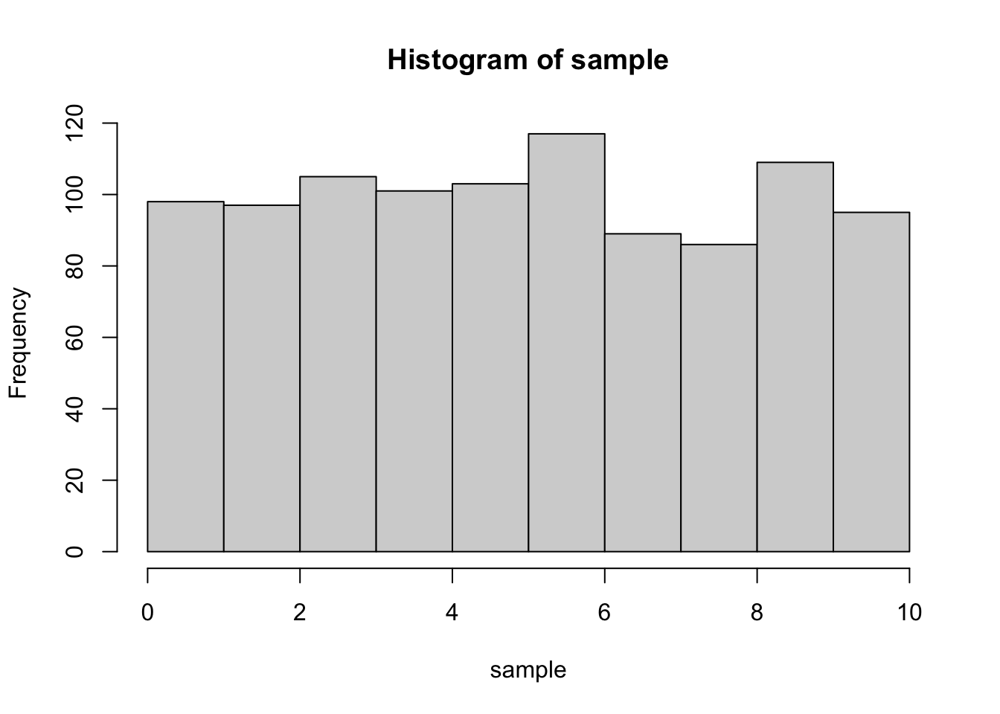
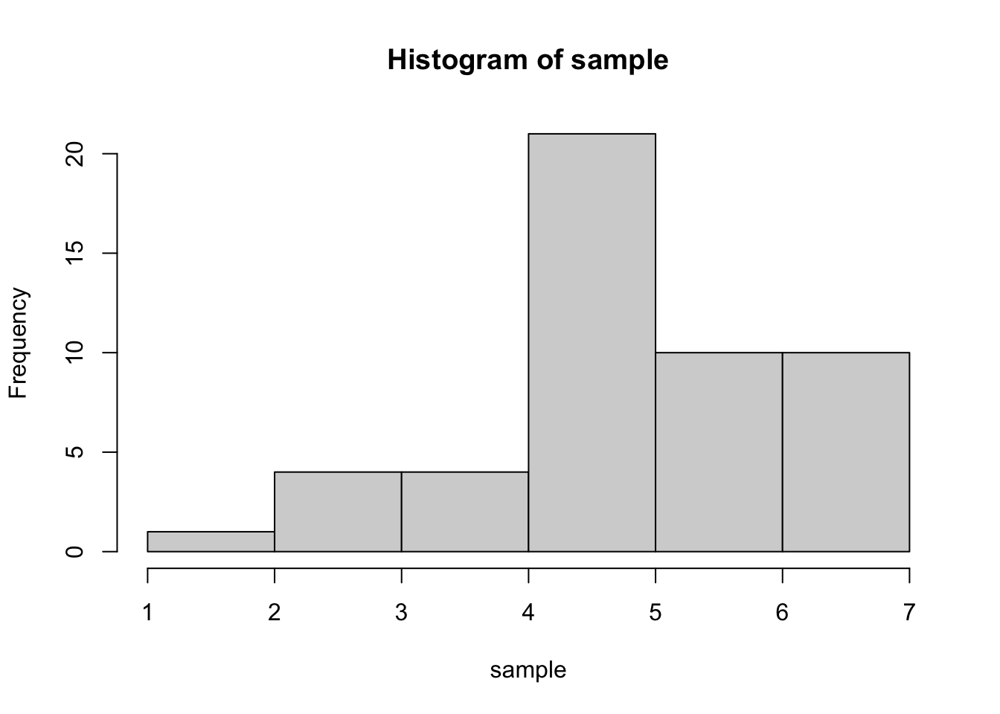
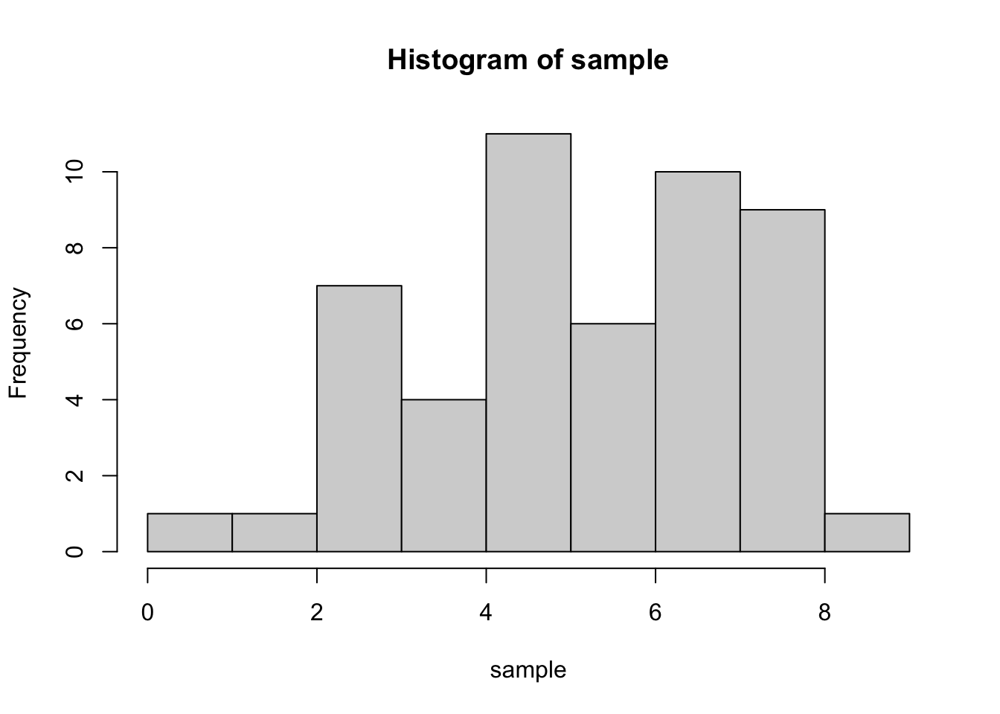

# here mean and sd - parameters in "general" population
# n - number of elements we choose from population
norm_sample = rnorm(n=100, mean=0, sd=1)
#parameters of **sample**
mean(norm_sample)[1] -0.003545587sd(norm_sample)[1] 0.991645# here mean and sd - parameters in "general" population
# n - number of elements we choose from population
norm_sample = rnorm(n=100, mean=0, sd=1)
#parameters of **sample**
mean(norm_sample)[1] -0.003545587sd(norm_sample)[1] 0.991645exp_sample = rexp(n=1000, rate=2)
# mean()
# sd()exp_sample = runif(n=1000, min=0, max=1)
# mean()
# sd()se = function(x){
sd(x)/sqrt(length(x))
}sample_size = 100
n_samples = 10000
df_trial <- tibble(
sample_ID = rep(1:n_samples, each=sample_size),
value = runif(sample_size*n_samples, -10, 0)
)
df_standart =
df_trial |>
group_by(sample_ID) |>
summarize(m = mean(value)) |>
mutate(z_m = (m - mean(m))/sd(m))
mean(df_standart$z_m)[1] 9.026668e-17sd(df_standart$z_m)[1] 1 df_standart |>
ggplot() +
geom_density(aes(x=m),
# bins=30, col='black',
fill='skyblue') +
geom_density(aes(x=z_m),
# bins=30, col='black',
fill='red3')
sample_size = 1000
sample = runif(n=sample_size, min=0, max=10)
hist(sample)
n_samples = 1000
df_trial <- data.frame(
sample_ID = rep(1:n_samples, each=sample_size),
value = runif(sample_size*n_samples, 0, 10) # generating sample_size*n_samples values from the same distibution
)
df_trial |> group_by(sample_ID) |>
summarize(m = mean(value)) |>
ggplot() + geom_histogram(aes(x=m), bins=30, col='black', fill='skyblue')
sample_size = 1000
# sample = rexp()
# hist()n_samples = 1000
df_trial <- data.frame(
sample_ID = rep(1:n_samples, each=sample_size),
# value = rexp()
)
df_trial |>
group_by(sample_ID) |>
# summarize(....) |>
ggplot() +
geom_histogram(aes(x=m), bins=30, col='black', fill='skyblue')true_mean = 5
true_sd = 1sample_size = 50
sample = rnorm(sample_size, true_mean, true_sd)
sample_mean = mean(sample)
# sample_sd = sd(sample_norm)
sample_se = se(sample)
hist(sample)
quantiles = qnorm(0, 1, p = c(0.025, 0.975)) #+- 1.96
c(
sample_mean + quantiles[1] * sample_se,
sample_mean + quantiles[2] * sample_se
)[1] 4.532045 5.196192sample_size = 100
n_samples = 1000
true_mean=5
df_trial <- tibble(
sample_ID = rep(1:n_samples, each=sample_size),
value = rnorm(sample_size*n_samples, true_mean, 2)
)
quantiles = qnorm(0, 1, p = c(0.025, 0.975))
df_ci = df_trial |> group_by(sample_ID) |>
summarize(mu = mean(value),
se_sample = se(value),
conf.min = mu + quantiles[1] * se_sample,
conf.max = mu + quantiles[2] * se_sample) |>
mutate(out = ifelse((true_mean < conf.max) & (true_mean > conf.min), 'ok', 'missed'))
# df_ci |>
# ggplot(aes(y=)) +
# geom_errorbar(aes(xmin = , xmax = , col=)) +
# geom_vline(aes(xintercept = ), col='red', lty=2, size=2) +
# labs(y="Sample", color='CI covers true mean') Try to change sample size and see what will happen!
true_mean = 5
true_sd = 2sample_size = 50
sample = rnorm(sample_size, true_mean, true_sd)
sample_mean = mean(sample)
# sample_sd = sd(sample_norm)
sample_se = se(sample)
hist(sample)
quantiles = qt(df = length(sample)-1, p = c(0.025, 0.975))
quantiles[1] -2.009575 2.009575c(
sample_mean + quantiles[1] * sample_se,
sample_mean + quantiles[2] * sample_se
)[1] 4.644896 5.688951Try different size of sample!
Looking only on “95 percent confidence interval:”
t.test(sample)
One Sample t-test
data: sample
t = 19.89, df = 49, p-value < 2.2e-16
alternative hypothesis: true mean is not equal to 0
95 percent confidence interval:
4.644896 5.688951
sample estimates:
mean of x
5.166924